Summary
This experiment investigates golf driver launch conditions. Box-Behnken design to maximize carry distance and minimize side spin by tuning loft angle, shaft flex, and tee height.
The design varies 3 factors: loft deg (deg), ranging from 8 to 12, shaft flex (rating), ranging from 1 to 5, and tee height mm (mm), ranging from 40 to 70. The goal is to optimize 2 responses: carry yards (yds) (maximize) and side spin rpm (rpm) (minimize). Fixed conditions held constant across all runs include swing speed = 95mph, ball = three_piece.
A Box-Behnken design was chosen because it efficiently fits quadratic models with 3 continuous factors while avoiding extreme corner combinations — requiring only 15 runs instead of the 8 needed for a full factorial at two levels.
Quadratic response surface models were fitted to capture potential curvature and factor interactions. The RSM contour plots below visualize how pairs of factors jointly affect each response.
Key Findings
For carry yards, the most influential factors were shaft flex (44.4%), tee height mm (30.9%), loft deg (24.7%). The best observed value was 246.0 (at loft deg = 10, shaft flex = 3, tee height mm = 55).
For side spin rpm, the most influential factors were loft deg (52.4%), tee height mm (36.5%), shaft flex (11.0%). The best observed value was 369.0 (at loft deg = 8, shaft flex = 3, tee height mm = 40).
Recommended Next Steps
- Run confirmation experiments at the predicted optimal settings to validate the model.
- Consider whether any fixed factors should be varied in a future study.
Experimental Setup
Factors
| Factor | Low | High | Unit |
|---|
loft_deg | 8 | 12 | deg |
shaft_flex | 1 | 5 | rating |
tee_height_mm | 40 | 70 | mm |
Fixed: swing_speed = 95mph, ball = three_piece
Responses
| Response | Direction | Unit |
|---|
carry_yards | ↑ maximize | yds |
side_spin_rpm | ↓ minimize | rpm |
Configuration
{
"metadata": {
"name": "Golf Driver Launch Conditions",
"description": "Box-Behnken design to maximize carry distance and minimize side spin by tuning loft angle, shaft flex, and tee height"
},
"factors": [
{
"name": "loft_deg",
"levels": [
"8",
"12"
],
"type": "continuous",
"unit": "deg"
},
{
"name": "shaft_flex",
"levels": [
"1",
"5"
],
"type": "continuous",
"unit": "rating"
},
{
"name": "tee_height_mm",
"levels": [
"40",
"70"
],
"type": "continuous",
"unit": "mm"
}
],
"fixed_factors": {
"swing_speed": "95mph",
"ball": "three_piece"
},
"responses": [
{
"name": "carry_yards",
"optimize": "maximize",
"unit": "yds"
},
{
"name": "side_spin_rpm",
"optimize": "minimize",
"unit": "rpm"
}
],
"settings": {
"operation": "box_behnken",
"test_script": "use_cases/209_golf_driver_launch/sim.sh"
}
}
Experimental Matrix
The Box-Behnken Design produces 15 runs. Each row is one experiment with specific factor settings.
| Run | loft_deg | shaft_flex | tee_height_mm |
|---|
| 1 | 10 | 1 | 40 |
| 2 | 10 | 3 | 55 |
| 3 | 12 | 3 | 70 |
| 4 | 12 | 3 | 40 |
| 5 | 10 | 3 | 55 |
| 6 | 10 | 3 | 55 |
| 7 | 8 | 3 | 70 |
| 8 | 12 | 1 | 55 |
| 9 | 10 | 1 | 70 |
| 10 | 12 | 5 | 55 |
| 11 | 8 | 3 | 40 |
| 12 | 10 | 5 | 70 |
| 13 | 8 | 1 | 55 |
| 14 | 8 | 5 | 55 |
| 15 | 10 | 5 | 40 |
Step-by-Step Workflow
1
Preview the design
$ doe info --config use_cases/209_golf_driver_launch/config.json
2
Generate the runner script
$ doe generate --config use_cases/209_golf_driver_launch/config.json \
--output use_cases/209_golf_driver_launch/results/run.sh --seed 42
3
Execute the experiments
$ bash use_cases/209_golf_driver_launch/results/run.sh
4
Analyze results
$ doe analyze --config use_cases/209_golf_driver_launch/config.json
5
Get optimization recommendations
$ doe optimize --config use_cases/209_golf_driver_launch/config.json
6
Multi-objective optimization
With 2 competing responses, use --multi to find the best compromise via Derringer–Suich desirability.
$ doe optimize --config use_cases/209_golf_driver_launch/config.json --multi
7
Generate the HTML report
$ doe report --config use_cases/209_golf_driver_launch/config.json \
--output use_cases/209_golf_driver_launch/results/report.html
Features Exercised
| Feature | Value |
|---|
| Design type | box_behnken |
| Factor types | continuous (all 3) |
| Arg style | double-dash |
| Responses | 2 (carry_yards ↑, side_spin_rpm ↓) |
| Total runs | 15 |
Analysis Results
Generated from actual experiment runs using the DOE Helper Tool.
Response: carry_yards
Top factors: shaft_flex (44.4%), tee_height_mm (30.9%), loft_deg (24.7%).
ANOVA
| Source | DF | SS | MS | F | p-value |
|---|
| Source | DF | SS | MS | F | p-value |
| loft_deg | 2 | 43.1833 | 21.5917 | 1.661 | 0.2493 |
| shaft_flex | 2 | 154.3262 | 77.1631 | 5.936 | 0.0263 |
| tee_height_mm | 2 | 77.7190 | 38.8595 | 2.989 | 0.1073 |
| Lack | of | Fit | 6 | 95.7048 | 15.9508 |
| Pure | Error | 2 | 26.0000 | | |
| Error | 8 | 121.7048 | 13.0000 | | |
| Total | 14 | 396.9333 | 28.3524 | | |
Pareto Chart
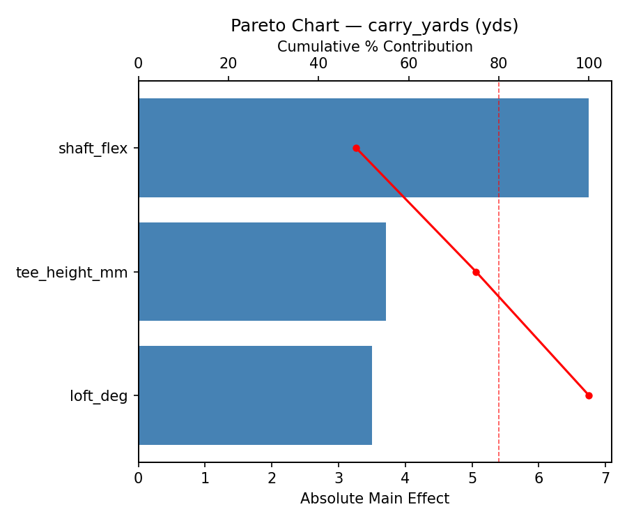
Main Effects Plot
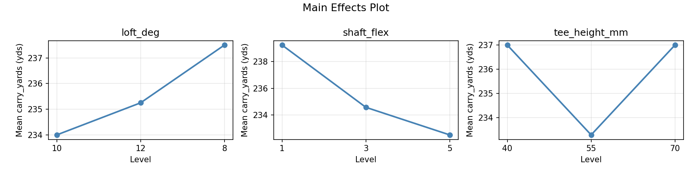
Normal Probability Plot of Effects
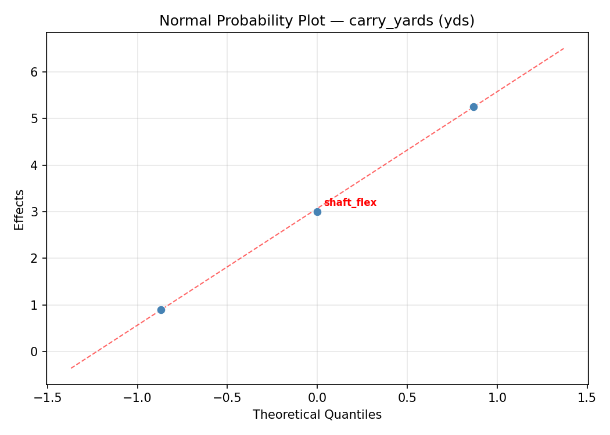
Half-Normal Plot of Effects
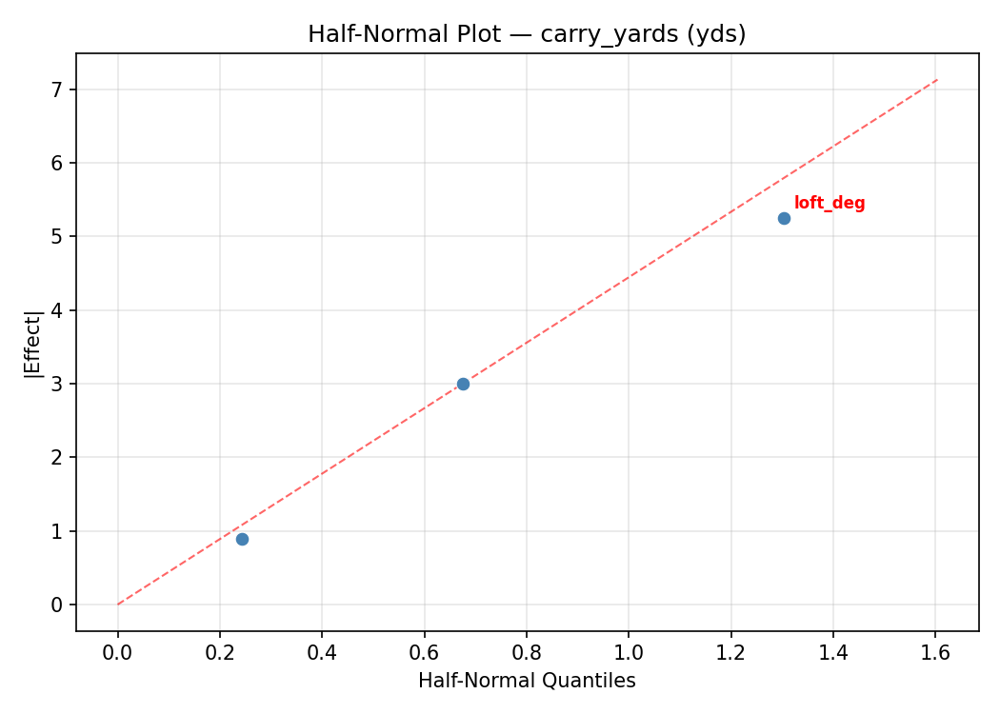
Model Diagnostics
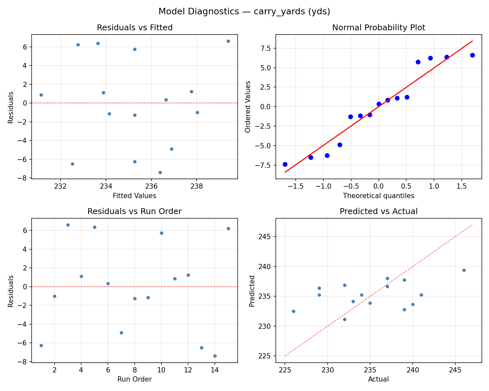
Response: side_spin_rpm
Top factors: loft_deg (52.4%), tee_height_mm (36.5%), shaft_flex (11.0%).
ANOVA
| Source | DF | SS | MS | F | p-value |
|---|
| Source | DF | SS | MS | F | p-value |
| loft_deg | 2 | 80802.4690 | 40401.2345 | 1.010 | 0.4064 |
| shaft_flex | 2 | 5067.7548 | 2533.8774 | 0.063 | 0.9391 |
| tee_height_mm | 2 | 39816.0762 | 19908.0381 | 0.498 | 0.6257 |
| Lack | of | Fit | 6 | 124830.6333 | 20805.1056 |
| Pure | Error | 2 | 80024.0000 | | |
| Error | 8 | 204854.6333 | 40012.0000 | | |
| Total | 14 | 330540.9333 | 23610.0667 | | |
Pareto Chart

Main Effects Plot
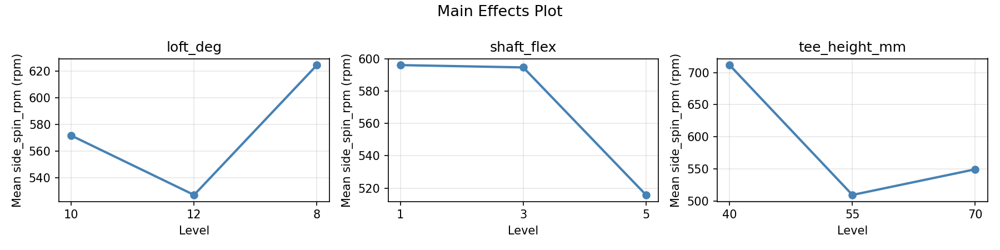
Normal Probability Plot of Effects
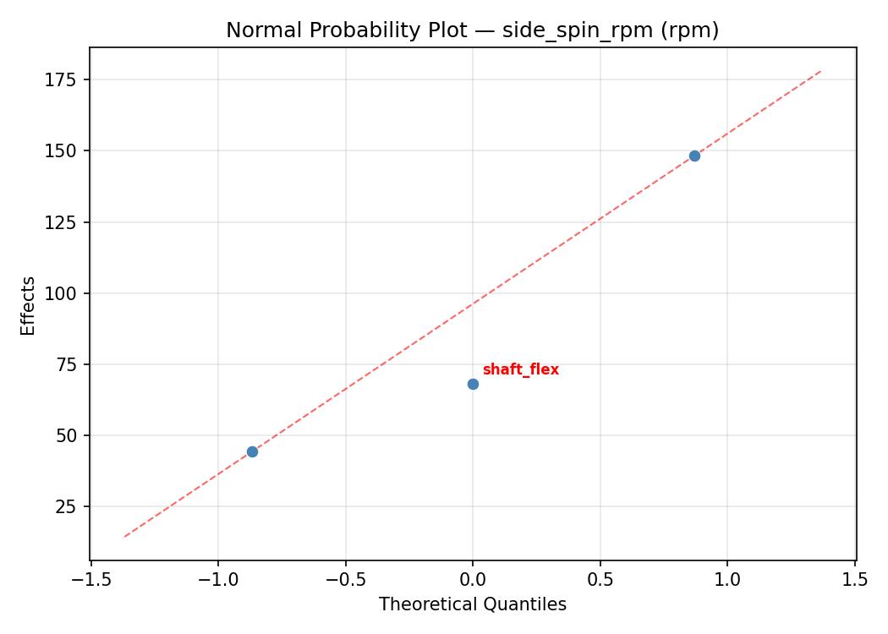
Half-Normal Plot of Effects
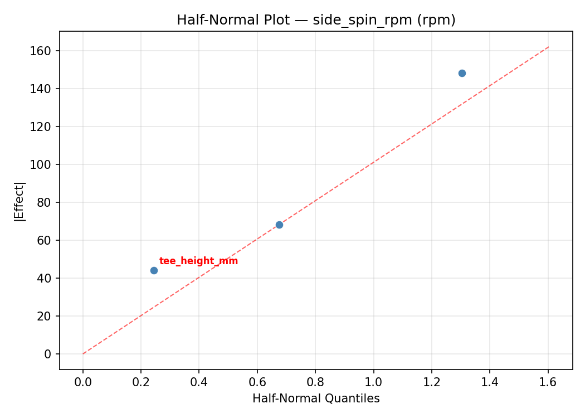
Model Diagnostics
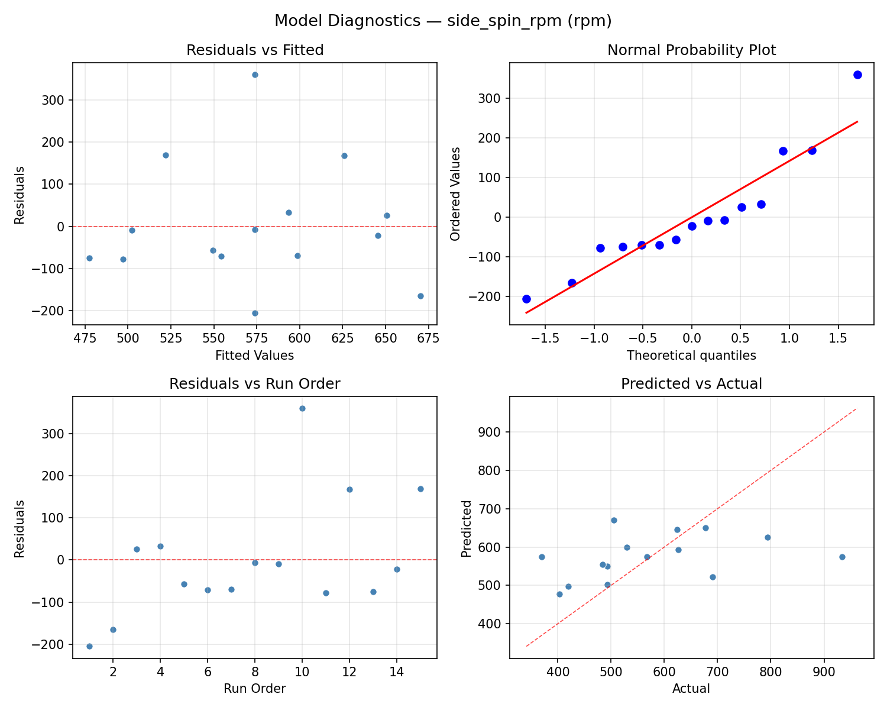
Response Surface Plots
3D surfaces fitted with quadratic RSM. Red dots are observed data points.
carry yards loft deg vs shaft flex

carry yards loft deg vs tee height mm
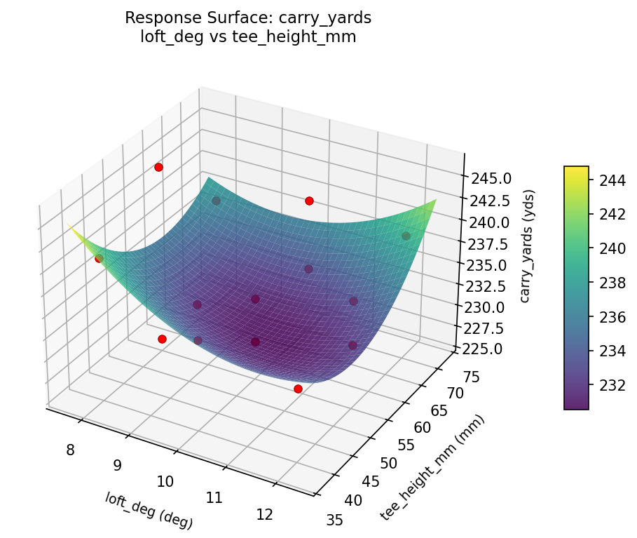
carry yards shaft flex vs tee height mm
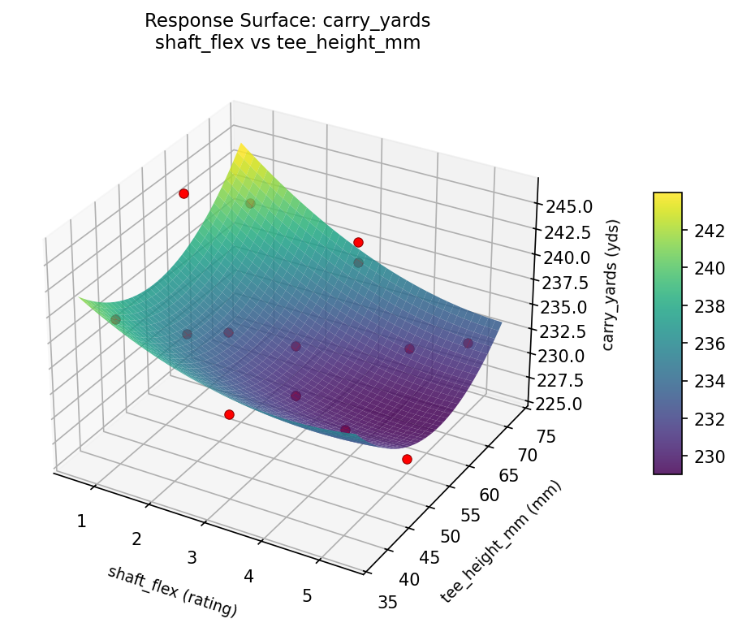
side spin rpm loft deg vs shaft flex

side spin rpm loft deg vs tee height mm
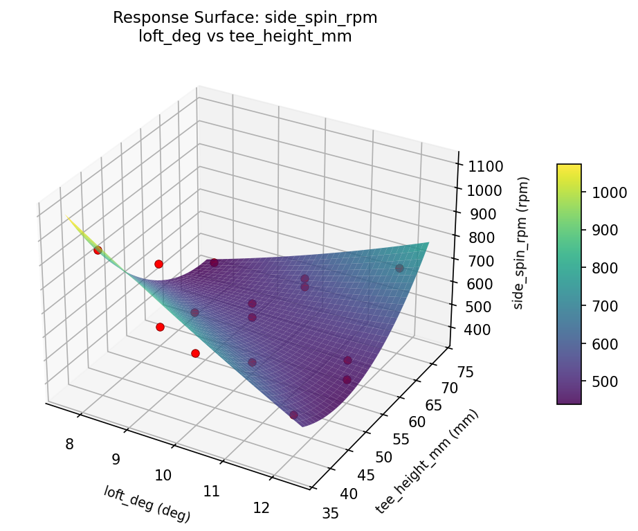
side spin rpm shaft flex vs tee height mm
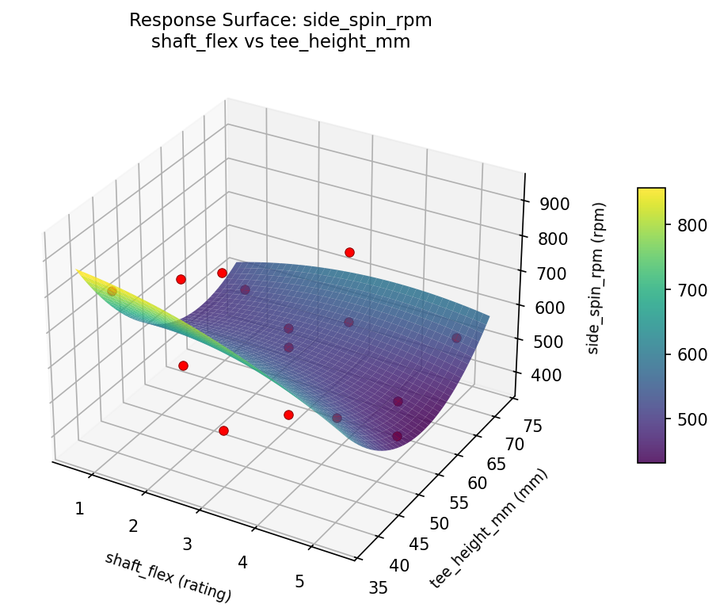
Multi-Objective Optimization
When responses compete, Derringer–Suich desirability finds the best compromise.
Each response is scaled to a 0–1 desirability, then combined via a weighted geometric mean.
Overall Desirability
D = 0.7122
Per-Response Desirability
| Response | Weight | Desirability | Predicted | Dir |
|---|
carry_yards |
1.5 |
|
246.00 0.9545 246.00 yds |
↑ |
side_spin_rpm |
1.0 |
|
677.00 0.4590 677.00 rpm |
↓ |
Recommended Settings
| Factor | Value |
|---|
loft_deg | 10 deg |
shaft_flex | 3 rating |
tee_height_mm | 55 mm |
Source: from observed run #3
Trade-off Summary
Sacrifice = how much worse than single-objective best.
| Response | Predicted | Best Observed | Sacrifice |
|---|
side_spin_rpm | 677.00 | 369.00 | +308.00 |
Top 3 Runs by Desirability
| Run | D | Factor Settings |
|---|
| #5 | 0.7102 | loft_deg=12, shaft_flex=5, tee_height_mm=55 |
| #6 | 0.6260 | loft_deg=10, shaft_flex=3, tee_height_mm=55 |
Model Quality
| Response | R² | Type |
|---|
side_spin_rpm | 0.6848 | quadratic |
Full Multi-Objective Output
============================================================
MULTI-OBJECTIVE OPTIMIZATION
Method: Derringer-Suich Desirability Function
============================================================
Overall desirability: D = 0.7122
Response Weight Desirability Predicted Direction
---------------------------------------------------------------------
carry_yards 1.5 0.9545 246.00 yds ↑
side_spin_rpm 1.0 0.4590 677.00 rpm ↓
Recommended settings:
loft_deg = 10 deg
shaft_flex = 3 rating
tee_height_mm = 55 mm
(from observed run #3)
Trade-off summary:
carry_yards: 246.00 (best observed: 246.00, sacrifice: +0.00)
side_spin_rpm: 677.00 (best observed: 369.00, sacrifice: +308.00)
Model quality:
carry_yards: R² = 0.7449 (quadratic)
side_spin_rpm: R² = 0.6848 (quadratic)
Top 3 observed runs by overall desirability:
1. Run #3 (D=0.7122): loft_deg=10, shaft_flex=3, tee_height_mm=55
2. Run #5 (D=0.7102): loft_deg=12, shaft_flex=5, tee_height_mm=55
3. Run #6 (D=0.6260): loft_deg=10, shaft_flex=3, tee_height_mm=55
Full Analysis Output
=== Main Effects: carry_yards ===
Factor Effect Std Error % Contribution
--------------------------------------------------------------
shaft_flex 7.6429 1.3748 44.4%
tee_height_mm 5.3214 1.3748 30.9%
loft_deg 4.2500 1.3748 24.7%
=== ANOVA Table: carry_yards ===
Source DF SS MS F p-value
-----------------------------------------------------------------------------
loft_deg 2 43.1833 21.5917 1.661 0.2493
shaft_flex 2 154.3262 77.1631 5.936 0.0263
tee_height_mm 2 77.7190 38.8595 2.989 0.1073
Lack of Fit 6 95.7048 15.9508 1.227 0.5137
Pure Error 2 26.0000 13.0000
Error 8 121.7048 13.0000
Total 14 396.9333 28.3524
=== Summary Statistics: carry_yards ===
loft_deg:
Level N Mean Std Min Max
------------------------------------------------------------
10 7 236.0000 3.0551 232.0000 240.0000
12 4 236.7500 4.0311 232.0000 241.0000
8 4 232.5000 9.1104 226.0000 246.0000
shaft_flex:
Level N Mean Std Min Max
------------------------------------------------------------
1 4 234.2500 4.9917 229.0000 241.0000
3 7 232.8571 4.5251 226.0000 239.0000
5 4 240.5000 3.8730 237.0000 246.0000
tee_height_mm:
Level N Mean Std Min Max
------------------------------------------------------------
40 4 234.2500 4.5735 229.0000 240.0000
55 7 237.5714 5.6526 229.0000 246.0000
70 4 232.2500 4.6458 226.0000 237.0000
=== Main Effects: side_spin_rpm ===
Factor Effect Std Error % Contribution
--------------------------------------------------------------
loft_deg 176.7500 39.6737 52.4%
tee_height_mm 123.1429 39.6737 36.5%
shaft_flex 37.2143 39.6737 11.0%
=== ANOVA Table: side_spin_rpm ===
Source DF SS MS F p-value
-----------------------------------------------------------------------------
loft_deg 2 80802.4690 40401.2345 1.010 0.4064
shaft_flex 2 5067.7548 2533.8774 0.063 0.9391
tee_height_mm 2 39816.0762 19908.0381 0.498 0.6257
Lack of Fit 6 124830.6333 20805.1056 0.520 0.7737
Pure Error 2 80024.0000 40012.0000
Error 8 204854.6333 40012.0000
Total 14 330540.9333 23610.0667
=== Summary Statistics: side_spin_rpm ===
loft_deg:
Level N Mean Std Min Max
------------------------------------------------------------
10 7 536.5714 121.3409 420.0000 794.0000
12 4 695.0000 172.6789 529.0000 934.0000
8 4 518.2500 154.8577 369.0000 677.0000
shaft_flex:
Level N Mean Std Min Max
------------------------------------------------------------
1 4 590.7500 242.9765 369.0000 934.0000
3 7 554.2857 137.8196 403.0000 794.0000
5 4 591.5000 107.0747 493.0000 691.0000
tee_height_mm:
Level N Mean Std Min Max
------------------------------------------------------------
40 4 559.0000 76.2146 493.0000 626.0000
55 7 624.1429 207.5809 369.0000 934.0000
70 4 501.0000 70.1427 403.0000 567.0000
Optimization Recommendations
=== Optimization: carry_yards ===
Direction: maximize
Best observed run: #3
loft_deg = 10
shaft_flex = 3
tee_height_mm = 55
Value: 246.0
RSM Model (linear, R² = 0.4251, Adj R² = 0.2684):
Coefficients:
intercept +235.2667
loft_deg +3.1250
shaft_flex +1.2500
tee_height_mm +3.1250
RSM Model (quadratic, R² = 0.6551, Adj R² = 0.0342):
Coefficients:
intercept +238.3333
loft_deg +3.1250
shaft_flex +1.2500
tee_height_mm +3.1250
loft_deg*shaft_flex -2.2500
loft_deg*tee_height_mm -1.5000
shaft_flex*tee_height_mm -0.7500
loft_deg^2 -1.1667
shaft_flex^2 -3.9167
tee_height_mm^2 -0.6667
Curvature analysis:
shaft_flex coef=-3.9167 concave (has a maximum)
loft_deg coef=-1.1667 concave (has a maximum)
tee_height_mm coef=-0.6667 concave (has a maximum)
Notable interactions:
loft_deg*shaft_flex coef=-2.2500 (antagonistic)
loft_deg*tee_height_mm coef=-1.5000 (antagonistic)
shaft_flex*tee_height_mm coef=-0.7500 (antagonistic)
Predicted optimum (from linear model, at observed points):
loft_deg = 12
shaft_flex = 3
tee_height_mm = 70
Predicted value: 241.5167
Surface optimum (via L-BFGS-B, linear model):
loft_deg = 12
shaft_flex = 5
tee_height_mm = 70
Predicted value: 242.7667
Model quality: Weak fit — consider adding center points or using a different design.
Factor importance:
1. loft_deg (effect: 6.2, contribution: 35.6%)
2. tee_height_mm (effect: 6.2, contribution: 35.6%)
3. shaft_flex (effect: 5.0, contribution: 28.7%)
=== Optimization: side_spin_rpm ===
Direction: minimize
Best observed run: #1
loft_deg = 8
shaft_flex = 3
tee_height_mm = 40
Value: 369.0
RSM Model (linear, R² = 0.3981, Adj R² = 0.2339):
Coefficients:
intercept +573.9333
loft_deg +113.2500
shaft_flex -32.7500
tee_height_mm +50.5000
RSM Model (quadratic, R² = 0.5829, Adj R² = -0.1678):
Coefficients:
intercept +534.0000
loft_deg +113.2500
shaft_flex -32.7500
tee_height_mm +50.5000
loft_deg*shaft_flex -25.7500
loft_deg*tee_height_mm +6.2500
shaft_flex*tee_height_mm -74.2500
loft_deg^2 +86.6250
shaft_flex^2 -36.3750
tee_height_mm^2 +24.6250
Curvature analysis:
loft_deg coef=+86.6250 convex (has a minimum)
shaft_flex coef=-36.3750 concave (has a maximum)
tee_height_mm coef=+24.6250 convex (has a minimum)
Notable interactions:
shaft_flex*tee_height_mm coef=-74.2500 (antagonistic)
loft_deg*shaft_flex coef=-25.7500 (antagonistic)
loft_deg*tee_height_mm coef=+6.2500 (synergistic)
Predicted optimum (from linear model, at observed points):
loft_deg = 12
shaft_flex = 3
tee_height_mm = 70
Predicted value: 737.6833
Surface optimum (via L-BFGS-B, linear model):
loft_deg = 8
shaft_flex = 5
tee_height_mm = 40
Predicted value: 377.4333
Model quality: Weak fit — consider adding center points or using a different design.
Factor importance:
1. loft_deg (effect: 226.5, contribution: 56.0%)
2. tee_height_mm (effect: 101.0, contribution: 25.0%)
3. shaft_flex (effect: 77.1, contribution: 19.1%)